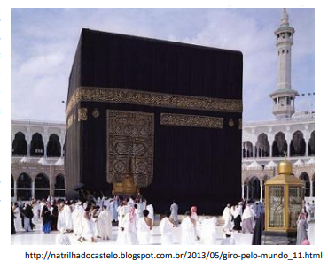
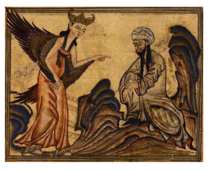

O MUNDO BIZANTINO E O MUNDO ISLÂMICO: DESDOBRAMENTOS DA HISTÓRIA DE UM IMPÉRIO E A RELIGIÃO COMO ELEMENTO DE UNIÃO E PODER.
Contextualizando
Para melhor compreendermos o mundo atual é necessário que estejamos abertos a novos conhecimentos, pois a complexidade com que se apresentam as diversas situações de caráter social, político e cultural nos dias de hoje nos exigem que voltemos no tempo a fim de desvendar as relações existentes entre o passado e o presente. Isto deve ser levando em conta quando estudamos o mundo bizantino e o mundo islâmico. Portanto, ao longo da leitura deste capítulo, você deverá buscar respostas as seguintes perguntas: Como teve início o império bizantino? Quais as suas principais características? Como era a Igreja neste local? Como se deu a criação do islamismo? De que forma aconteceu a expansão muçulmana? O que pregava o islã?
No século IV o imperador romano chamado Constantino transferiu a capital do Império Romano para a cidade de Bizâncio, uma antiga colônia grega localizada entre o mar Negro e o mar Mármara. Ela passou a ser chamada de Constantinopla em homenagem ao Imperador. Neste momento inicia-se a história do Império Bizantino, também conhecido como Império Romano do Oriente, herdeiro do Império Romano do Ocidente.
Ao mesmo tempo em que o ocidente romano dava sinais do desgaste e decadência causada por uma série de fatores dos quais as invasões dos povos germânicos tenha sido o maior deles, Constantinopla tornava-se uma grande e próspera cidade devido principalmente à proximidade das rotas comerciais que ligavam o Mar Mediterrâneo ao Mar Negro, e a Europa à Ásia, facilitando o comércio naquela região.
CONSTRUINDO CONHECIMENTOS
O imperador bizantino era chamado de Basileus, detinha autoridade absoluta, devendo ser o responsável e regulador da ordem social. Ele era eleito pela união do Senado, do exército e do povo, contudo, não havia uma regra sucessória claramente definida. Em vida, ele nomeava o seu sucessor, mas em caso de morte esta tarefa ficava a cargo do patriarca, chefe religioso da Igreja Ortodoxa.
A burocracia bizantina era vasta, rígida e centralizada nas mãos do Imperador. O aparelho administrativo era bem montado dando força e coesão à diversidade de povos e culturas que compunham este vasto império. Os maiores governantes do Império Bizantino foram Constantino (fundador de Constantinopla); Teodósio (dividiu o império); e, Justiniano (momento do apogeu da civilização bizantina). Entre os maiores feitos de Justiniano estão a compilação das leis romanas e o combate as heresias, dando unidade ao cristianismo e fortalecendo a monarquia. Ele também enfrentou uma grande revolta popular chamada Revolta de Nika, promoveu a construção da Igreja de Santa Sofia e realizou diversas conquistas territoriais.
Ele desenvolveu uma política onde o Estado intervinha na economia que era bastante movimentada no comércio marítimo e na agricultura. A sociedade bizantina foi altamente hierarquizada. Em primeiro lugar estava a família real. Depois dela estava a nobreza formada e pelos assessores do rei. Abaixo deles o alto clero. Uma elite formada por proprietários de terras e comerciantes e depois deles os donos de oficinas e comércios. Existiam também os pequenos agricultores, trabalhadores urbanos e o baixo clero sem distinção de nobreza.
No Império Bizantino existiam divisões territoriais chamadas de themas, que eram grandes áreas governadas por estrategos com poderes militares e civis. O sistema de themas acabou por gerar uma série de problemas políticos uma vez que surge uma aristocracia detentora de altos postos políticos e militares, com grandes propriedades, e que passaram a rivalizar com o poder do Imperador.
Um dos principais aspectos da sociedade bizantina diz respeito aos assuntos religiosos. O fato da Igreja católica deter a supremacia da religião neste estado, isto não foi o suficiente para que ocorresse o surgimento de heresias do arianismo, que negava a Santíssima Trindade, a questão monofisista, que negava a natureza humana de Cristo, defendendo que ele teria apenas uma única natureza, a divina, e a iconoclastia, que foi um movimento políticoreligioso contra a veneração de ícones e imagens religiosas, proibindo-as nos templos.
Durante o período que ficou conhecido por Cisma do Oriente, a partir do ano 1054, ocorre a divisão da Igreja em Igreja Católica Apostólica Romana, ou simplesmente Igreja Católica, e Igreja Católica Apostólica Ortodoxa ou apenas Igreja Ortodoxa. O Grande Cisma como também ficou conhecido o evento que causou a ruptura da Igreja, culminou com os líderes da Igreja de Constantinopla e da Igreja de Roma excomungando-se mutuamente.
O cristianismo podia ser observado nas mais diferentes manifestações artísticas do mundo bizantino. Entre as principais manifestações da arte deste povo estão os mosaicos que decoram as igrejas e catedrais, consideradas excelentes expressões da arquitetura religiosa do Império Romano do Oriente. As artes deveriam fazer do Império terrestre o melhor reflexo do esplendor do império celeste. Na arte religiosa era retratada além da paixão de Cristo, a virgem e os profetas. Por seu turno, a arte profana retratava a corte e os triunfos imperiais.
Além do clero mundano, existiam os monges que desempenhavam um papel fundamental na sociedade bizantina. Eles foram considerados pela população como sendo imbuídos dos mais puros princípios da fé cristã, dedicando-se a orações e a produção de imagens religiosas, fato este que lhes rendia muito dinheiro com a venda destas imagens, e que também lhes dava uma condição privilegiada no que se refere à influência que exerciam sobre a sociedade da época.
Influenciados pela ideia de guerra santa, característica dos muçulmanos, desenvolvem o ideal de predestinação e defesa da cristandade. Eles sentiam-se superiores aos cristãos do ocidente, local onde um bárbaro germânico (Carlos Magno) tornara-se imperador apoiado pelo papa. Consideravam-se, portanto, os legítimos continuadores do Imp. Romano.
Com a morte de Justiniano, o Império Bizantino passou por um período de enfraquecimento e tornou-se alvo de diferentes povos que passaram a invadir as suas fronteiras. Cada vez mais acentuava-se o processo de decadência da sociedade bizantina que culminou com a queda de Constantinopla nas mãos dos turcos otomanos no ano de 1453.
Nos dias atuais a cidade de Constantinopla já não existe, Suas fronteiras estão dentro do que conhecemos como a cidade de Istambul, situada na Turquia, e que ainda mantém muitos dos elementos culturais artísticos e religiosos legados pelo antigo Império Bizantino.
A civilização islâmica desenvolveu-se a partir da Península Arábica, região de desertos, onde o Mar Vermelho apresenta o principal recurso ao desenvolvimento da economia agrícola e pastoril. Nesta região não havia unidade politica, e as populações locais organizavam-se em tribos ou clãs.
 Existiam uma série de elementos comuns entre estes grupos, tais como laços de parentesco e elementos culturais diversos como o idioma e o politeísmo. A Caaba, uma espécie de templo, localizada na cidade de Meca, abriga ainda hoje uma pedra negra, adorada pelos crentes da região que acreditavam que ela havia sido trazida pelo anjo Gabriel sendo originalmente branca e, tornando-se negra justamente por causo dos pecados humanos.
Meca tornou-se o principal centro religioso e comercial da região, sendo controlado pela tribo dos coraixitas, de onde descendia Maomé, o fundador do islamismo elemento de unificação dos povos árabes e demais grupos étnicos da região. Maomé nasceu por volta do ano de 570 dC.,sendo criado nas tradições politeístas que eram adotadas pelas tribos que viviam na península arábica.
https://www.streetwitnessing.org/religions-philosophies/abraham-western-religion/abrahamic-religions-islam/
Representação da revelação feita pelo anjo Gabriel do Alcorão para o profeta Maomé
 Entre as principais influências no pensamento religioso de Maomé estão o cristianismo e o judaísmo, visto que no norte e no sul da Península Arábica existia um grande número de judeus e cristãos. Na cidade de Medina havia uma colônia cristã desde o século IV. Além disso, a préexistência de uma divindade suprema, Alá, que era anterior a Maomé, foi um terreno propício ao monoteísmo. Havia ainda a amplitude da religião cristã e judaica baseadas em uma escritura que superava as fronteiras tribais.
O contato com os judeus e cristãos fez Maomé perceber sua inspiração religiosa, revoltandose contra a alteração das palavras de Alá, feitas por aqueles povos. Era necessário restabelecer o ensinamento divino. Entre os principais elementos que formavam a pregação inicial de Maomé estão a bondade e poder de Alá, juízo final, reconhecimento e adoração a Deus, condenação dos ricos e dos ingratos e purificação mediante a generosidade e a submissão a Deus.
A indiferença dos coraixitas frente à pregação de Maomé deu lugar as hostilidades e perseguições. Ele passou a ser perseguido por membros do seu próprio clã, pois pregava que iriam para o inferno aqueles que se recusavam a se converter. Por outro lado, o conteúdo religioso da sua pregação aproximou pessoas dos mais diversos grupos sociais, desde jovens membros das famílias influentes de Meca, até os escravos. Pregou uma solidariedade social de bases religiosas contra o individualismo existente.
Os seguidores do profeta que chegavam a cidade eram geralmente pobres, o que levou-os a prática das razias. As caravanas de Meca que percorriam o caminho para a Síria, tornaram-se alvo das expedições predatórias de Medina. Uma quita parte ficava com o profeta, o restante era dividido. Os mortos na Guerra Santa recebiam o título de Mártires.
Sentindo-se fortalecido, no ano de 628, Maomé faz uma peregrinação até Meca, sendo impedido de entrar na cidade, território sagrado. É feito um acordo para que retorne no ano seguinte, o que de fato aconteceu. Em 630, Maomé toma a cidade de Meca, rompendo a trégua, encontrando fraca resistência. Ídolos e afrescos representando figuras do antigo testamento são destruídos e Maomé torna-se ao mesmo tempo líder religioso, chefe de Estado, legislador, juiz, e chefe do exército.
condição privilegiada no que se refere à influência que exerciam sobre a sociedade da época.Cresce o seu prestígio, sendo enviadas a Medina delegações das mais distantes tribos da península. Maomé dirige expedições por toda a região norte da península, submetendo ou fazendo acordos com os chefes locais. Junto dos seus seguidores criou o Estado muçulmano, regido por um governo teocrático que cresceu e consolidou-se através de conquistas militares.
Observe o mapa presente no link abaixo, percebendo a expansão do território islâmico.
http://blogdoconsistorio1.blogspot.com.br/2013/12/expansao-muculmana-maome-cruzadas-islamismo.html
A expansão vitoriosa dos árabes deve-se sobretudo a atração da pilhagem, (mulheres, dinheiro, joias), entusiasmo religioso, necessidade de buscar recursos naturais que suprissem a população, afinidades culturais e raciais pois várias populações conquistadas eram de origem semítica, preexistência de contatos comerciais com a maioria dos povos conquistados, e a tolerância religiosa, pois povos como judeus e cristãos haviam recebido o livro de Deus, logo, deveriam apenas admitir o controle político e o pagamento de impostos aos árabes.
Morreu no ano de 632, após sua última peregrinação a Meca. Não deixou sucessor claramente indicado, e Abu-Bakr, um dos seus sogros tornou-se seu sucessor. Nesse mesmo período várias tribos de beduínos revoltam-se, mas são submetidas, tendo início uma série de lutas para a integração das populações da península ao Islã.
Os contatos entre as civilizações cristã e muçulmana legou ao mundo contemporâneo uma série de contribuições no campo das artes e das ciências, como é o caso da astronomia e da matemática. Entre os principais pensadores árabes está Avicena, escritor de tratados sobre medicina e filosofia.
AÇÃO E REFLEXÃO
SETE CONFLITOS ATUAIS CAUSADOS POR DIFERENÇAS RELIGIOSAS
Leia o texto disponível no link abaixo:
: http://super.abril.com.br/blog/superlistas/7-conflitos-atuais-causados-por-diferencas-religiosas/
Após a leitura do texto, faça um resumo dos principais aspectos relativos a ada um dos casos apresentados. Emita o seu ponto de vista a respeito dos conflitos religiosos elencados na reportagem
O QUE APRENDI
Ao longo da leitura deste capítulo, você teve a oportunidade de conhecer mais a respeito do Império Bizantino, como ele iniciou a partir da divisão do Império Romano, e quais foram os legados do mundo romano a este império em expansão. Analisamos quais foram as suas principais características e o papel da igreja neste Estado. Em relação ao mundo Islâmico, analisamos quais foram os principais elemento de sua formação e desenvolvimento, o período em que Maomé forjou o modo de pensar deste grupo, e as principais características de cunho religioso, tendo em vista que a religião exerce um papel de destaque nesta sociedade.